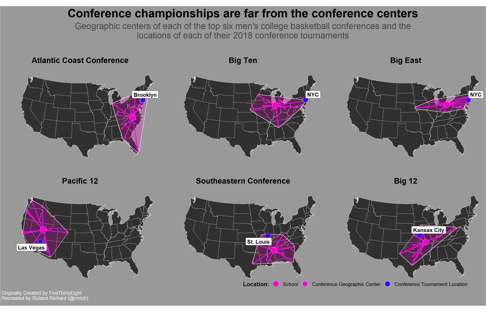

#30DayMapChallengeI used R to recreate the map titled The Ridiculousness Of Conference Tournament Locations, In 6 Maps which was originally created by Neil Paine and Ella Koeze from FiveThirtyEight. All of the code used to produce this map is below.
First data were obtained from the public NCAA database using bigquery
library(bigrquery)
library(DBI)
library(tidyverse)
library(ggmap)
library(sf)
# Query NCAA Database -----------------------------------------------------
# Project ID
mbb <- "xxxx-xx-xxxx"
con <- dbConnect(
bigrquery::bigquery(),
project = "bigquery-public-data",
dataset = "ncaa_basketball",
billing = mbb
)
# Load All Division I Men's Basketball Teams
ncaa_mbb <- dbReadTable(con,"mbb_teams")
# Filter Power 5 (and Big East) Conferences
power6 <- ncaa_mbb %>% filter(conf_alias %in% c("ACC","BIG10","BIG12","BIGEAST","PAC12","SEC"))
# Select Addresses of Power 6 Program Venues for Geocoding ---------------------
# Register Google Geocoder API Key
register_google(key = 'ENTER_YOUR_KEY_HERE')
power6Geo <- power6 %>%
unite(col = 'addresses', c(venue_address,venue_city,venue_state),sep = ",",remove = FALSE) %>%
mutate(type = "school")
# loop through addresses to geocode lat/lon
for(i in 1:nrow(power6Geo))
{
# Print("Working...")
result <- geocode(power6Geo$addresses[i], output = "latlona")
power6Geo$lon[i] <- as.numeric(result[1])
power6Geo$lat[i] <- as.numeric(result[2])
power6Geo$geoAddress[i] <- as.character(result[3])
}
# Geocode Conference Conference Geographic Centers, Suggested, and Actual Tournament Locations
conf_loc <- read_csv("conf_tourn_locations.csv")
# rename columns to bind with Power6 data
confGeo <- conf_loc %>%
select(-c(sugg_dist, tourney_dist)) %>%
gather(alias, city, -conf_alias) %>%
# create type variable for easier grouping in ggplot
mutate(
type = case_when(
alias == "geog_center" ~ "center",
alias == "tourney_loc" ~ "tourney",
alias == "sugg_loc" ~ "suggested"
)
)
for(i in 1:nrow(confGeo))
{
# Print("Working...")
result <- geocode(confGeo$city[i], output = "latlon")
confGeo$lon[i] <- as.numeric(result[1])
confGeo$lat[i] <- as.numeric(result[2])
}
confGeo <- confGeo %>% filter(type != 'suggested')
# Bind Power6 School geographic data with conference geographic data
typ <- list(`1` = "school", `2` = "center", `3` = "tourney")
conf <- list(`1` = "ACC", `2` = "BIG10", `3` = "BIGEAST", `4` = "PAC12", `5` ="SEC",`6` = "BIG12")
power6sf <- power6Geo %>%
select(conf_alias, type,alias,venue_city,venue_state,lon,lat) %>%
unite('city',c(venue_city,venue_state),sep = ", ",remove = T) %>%
bind_rows(confGeo) %>%
st_as_sf( coords = c('lon','lat'),agr = 'constant',crs = 4326, remove = FALSE) %>%
mutate(type = recode_factor(type,!!!typ),
conf_alias = recode_factor(conf_alias, !!!conf)
) %>%
mutate(conf_name = factor(conf_alias,
labels = c(
"Atlantic Coast Conference:\nBrooklyn",
"Big Ten:\nNYC",
"Big East:\nNYC",
"Pacific 12:\nLas Vegas",
"Southeastern Conference:\nSt. Louis",
"Big 12:\nKansas City"
))
)
power6sf <- power6sf %>%
separate(
conference,
into = c('conf_nm', 'tourn_loc'),
sep = ':\n',
remove = F
) %>%
mutate(conf_nm = factor(
conf_alias,
labels = c(
"Atlantic Coast Conference",
"Big Ten",
"Big East",
"Pacific 12",
"Southeastern Conference",
"Big 12"
)
))
# save prepared data
write_rds(ncaa_mbb,"ncaa_mbb_all_d1.rds")
write_rds(power6, "ncaa_mbb_power6.rds")
write_rds(power6sf,"ncaa_mbb_power6_geocoded.rds")Next I used ggplot ,sf , among other packages to produce the map.
################################################################################
## Project: Richard_NCAA_BB_Map
## Script purpose: Replicate FiveThirtyEight NCAA College Basketball Map
## Date: 26-Sep-2019
## Author:Roland Richard
################################################################################
library(tidyverse)
library(rio)
library(sf)
library(lwgeom)
library(spData)
library(tigris)
library(grid)
library(extrafont)
library(ggrepel)
options(tigris_use_cache = TRUE)
# load Data prepared in "code/Richard_NCAA_BB_Data_Query_Prep.R"
conf_loc <- import("conf_tourn_locations.csv")
ncaa_mbb <- import("ncaa_mbb_all_d1.rds")
power6 <- import("ncaa_mbb_power6.rds")
power6Geo <- import("ncaa_mbb_power6_geocoded.rds")
# Function to create lines using great circles
journeys_to_sf <- function(journeys_data,
start_long = start.long,
start_lat = start.lat,
end_long = end.long,
end_lat = end.lat) {
quo_start_long <- enquo(start_long)
quo_start_lat <- enquo(start_lat)
quo_end_long <- enquo(end_long)
quo_end_lat <- enquo(end_lat)
journeys_data %>%
select(
!! quo_start_long,
!! quo_start_lat,
!! quo_end_long,
!! quo_end_lat
) %>%
transpose() %>%
map(~ matrix(flatten_dbl(.), nrow = 2, byrow = TRUE)) %>%
map(st_linestring) %>%
st_sfc(crs = 4326) %>%
st_sf(geometry = .) %>%
bind_cols(journeys_data) %>%
select(everything(), geometry)
}
# Load US State Map -------------------------------------------------------
# US State abbreviations
us <- unique(fips_codes$state)[c(1:51)]
cont <- us[-c(2,12)]
# US State Polygon file
states <- states(cb = TRUE)
# Extract Lower 48 States (No Power 6 Schools in AK or HI)
l48 <- st_as_sf(states) %>%
filter(STUSPS %in% cont) %>%
st_transform(crs = 2163)
# Connect school points by conference
conf_schls <- power6Geo %>%
filter(type == "school") %>%
select(conf_nm, alias,lon,lat) %>%
st_drop_geometry() %>%
set_names(c("conf_nm", "alias", "start.long", "start.lat"))
conf_ctrs <- power6Geo %>%
filter(type == "center") %>%
select(conf_nm,lon,lat) %>%
st_drop_geometry() %>%
set_names(c("conf_nm", "end.long", "end.lat"))
conf_hubs <-
left_join(conf_schls, conf_ctrs) %>%
journeys_to_sf() %>%
st_segmentize(units::set_units(100, km))
# Create Conference footprint boundary
conf_poly <- power6Geo %>%
filter(type != "tourney") %>%
group_by(conf_nm) %>%
summarise() %>%
st_cast("POLYGON") %>%
st_convex_hull() %>%
st_transform(crs = 2163)
# convert to buffer to surround points
conf_bounds <- conf_poly %>% st_buffer(dist = 35000,endCapStyle = "SQUARE")
# merge with conference location data for labels
tourn_labels <- power6Geo %>% filter(type == 'tourney')
tourn_labels <- tourn_labels %>%
mutate(
lab_x = case_when(
conf_alias == "BIG12" ~ -95.1,
conf_alias == "PAC12" ~ -114.1,
conf_alias == "SEC" ~ -95.1,
TRUE ~ -45.1
),
lab_y = case_when(
conf_alias == "BIG12" ~ 40.1,
conf_alias == "PAC12" ~ 37.1,
conf_alias == "SEC" ~ 40.1,
TRUE ~ 41.0 )
)
# Map Power 6 Programs and Conf. Tournament Locations ---------------------
power6_map <- ggplot() +
geom_sf(
data = l48,
fill = '#303030',
color = '#E8E8E8',
lwd = 0.1
) +
geom_sf(
data = conf_hubs,
aes(group = conf_nm),
color = '#FF00FF',
lwd = 1,
show.legend = FALSE
) +
geom_sf(
data = power6Geo,
aes(
fill = type,
color = type,
size = type
),
shape = 21,
alpha = 0.9,
show.legend = "point"
) +
geom_sf(
data = conf_bounds,
aes(group = conf_nm),
fill = '#FF00CC',
color = '#FFFFFF',
alpha = 0.20
) +
geom_sf(
data = tourn_labels,
fill = "#3300FF",
color = "#FFFFFF",
size = 5,
shape = 21,
show.legend = "point"
) +
geom_label_repel(
data =
tourn_labels %>% filter(conf_alias %in% c("ACC", "BIG10", "BIGEAST")),
aes(x = lab_x, y = lab_y, label = tourn_loc,geometry = geometry),
stat = "sf_coordinates",
nudge = tourn_labels$lab_x + 15,
force = 2,
hjust = 0,
direction = "y",
size = 3.9,
col = "#000000",
fill = "#FFFFFF",
fontface = "bold"
) +
geom_label_repel(
data =
tourn_labels %>% filter(conf_alias %in% c("BIG12", "PAC12", "SEC")),
aes(
x = lab_x,
y = lab_y,
label = tourn_loc,
geometry = geometry
),
stat = "sf_coordinates",
size = 3.9,
force = 5,
direction = "both",
col = "#000000",
fill = "#FFFFFF",
fontface = "bold"
) +
scale_fill_manual(
name = "Location:",
values = c("#FF00CC","#FF00CC","#3300FF"),
labels = c(
"School",
"Conference Geographic Center",
"Conference Tournament Location"
)
) +
scale_color_manual(
name = "Location:",
values = c("#FF00FF","#FFFFFF","#FFFFFF"),
labels = c(
"School",
"Conference Geographic Center",
"Conference Tournament Location"
)
) +
scale_size_manual(
name = "Location:",
values = c(2, 6, 5),
labels = c(
"School",
"Conference Geographic Center",
"Conference Tournament Location"
)
) +
guides(shape = FALSE,
colour = guide_legend(override.aes = list(
shape = 21,
size = 5,
fill = c("#FF00CC", "#FF00CC", "#3300FF"),
color = c("#FF00FF","#FFFFFF","#FFFFFF")
))) +
coord_sf(
crs = st_crs(2163),
xlim = c(-2500000, 2500000),
ylim = c(-2300000, 730000),
clip = "on"
) +
facet_wrap(.~conf_nm,nrow = 2) +
labs(title = "Conference championships are far from the conference centers",
subtitle = "Geographic centers of each of the top six men's college basketball conferences and the\nlocations of each of their 2018 conference tournaments\n",
caption = " Originally Created by FiveThirtyEight\n Recreated by Roland Richard (@rorich)\n") +
theme_void(base_family = "Roboto Condensed") +
theme(
legend.position = c(0.5, 0),
legend.justification = c(0, 0),
legend.direction = "horizontal",
legend.box.just = "center",
legend.title = element_text(size = 12, face = "bold", hjust = 1),
legend.text = element_text(size = 10, hjust = 0.5),
strip.background = element_blank(),
strip.text.x = element_text(face = 'bold', size = 16, hjust = 0.5, vjust = 0.5,margin = margin(0.5,0,0.5,0, "cm")),
plot.title = element_text(size = 24, face = "bold", hjust = 0.5),
plot.subtitle = element_text(color = "#454545", size = 18, face = "plain", hjust = 0.5),
plot.caption = element_text(size = 10, face = "plain", color = "#FFFFFF", hjust = 0, vjust = 1),
panel.background = element_blank(),
plot.background = element_rect(fill = "#999999")
)